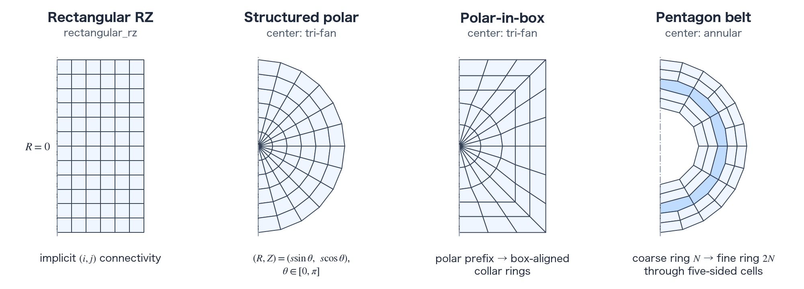
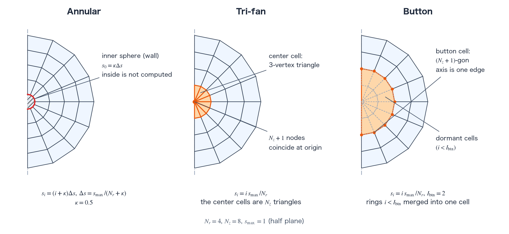

2D RZ meshes: structured & multiblock reference
A 2D mesh combines a logical mesh with a connectivity (mesh topology). The logical mesh is chosen with Mesh.logical_mesh_2d: structured rectangular, spherical polar, polar-in-box, or cone shell. The connectivity is chosen with Mesh.topology_scheme: a single block, or a multiblock mesh connected through CSR (compressed sparse row). Every family hands revolved RZ volumes, corner geometry, and node, cell, and face connectivity to hydrodynamics. Terms specific to this calculation are defined in the terms section.
Physical mechanism
Every 2D family—rectangular, polar, polar-in-box, cone shell, and pentagon belt—must deliver the same objects to the physics: revolved RZ cell volumes, exact corner geometry, and consistent node, cell, and face topology. Every builder hands these three to hydrodynamics. The physics combinations that run, however, differ between families, and input validation rejects the unsupported ones. For example, on a half-plane mesh (spherical_polar_halfplane) the 2D laser runs only on multiblock_polar_tier_cart_center with a Cartesian-box center (polar_tier_center_kind="cart_box") and without polar_tier_native_pentagon or shell_polar_cap_dendrite. polar_in_box and cone_shell support mesh generation, initialization, and initial output only; the first timestep stops with a ConfigError.
The families solve different geometric problems. Rectangular RZ is the robust default; polar coordinates follow spherical convergence, and because mass flux in a spherically converging flow is proportional to solid angle, equal-solid-angle zoning gives each \(\theta\) interval (a band that goes once around the axis on the sphere) an equal share of the mass flux. Polar-in-box reconciles a spherical target with a rectangular outer boundary, while a cone shell fits a target with a truncated-cone wall. Near a polar center, a pentagon belt absorbs a change in angular count into topology. Toward the center, the angular cell width shrinks and slender cells appear near the axis; this elongation cannot be removed by node smoothing, so the angular count itself must be reduced partway in. A pentagon belt places a five-vertex cell where the angular count doubles: each cell touches one edge on the coarse side and two edges on the fine side. With quadrilaterals alone, the middle node on the fine side would sit partway along the edge of a coarse cell (a hanging node). The pentagon cell takes that node as one of its own vertices, so the connectivity stays conforming.
Mesh quality is an admissibility condition, not an aesthetic score. This admissibility check uses the corner Jacobian, the Gauss-point Jacobian, the revolved RZ volume, and the axis margin. They measure whether a cell stays non-inverted, so that the volume, force, and remap operators remain meaningful (reference [1] gives background on Jacobian-based quality measures). When these checks are enabled in the hydrodynamics input, they predictively limit the timestep and may reject a candidate state. Their switches (Numerics.hydro.mesh_quality_dt_cfl_enabled, in_hydro_corner_j_guard_enabled, and others) are all off by default. The candidates of an ALE rezone have an acceptance check of the same kind (admissibility and acceptance). A builder fails loudly instead of returning a mesh in which the orientation or the RZ volume of a cell is not positive.
- Connectivity: single-block structured cells use implicit four-corner indexing. Multiblock families use CSR cell-to-node, reverse node-to-cell, and face-adjacency structures, with each seam sharing node IDs whose coordinates exactly one owner block writes (seams and owner blocks).
- Center treatment: around the origin of a polar mesh, choose annular, tri-fan, or button. The key is
polar_center_treatment, and the default is annular (polar center treatment). - Corner capacity:
corner_strideis 4 for quadrilateral layouts and the default multiblock families, 8 for the pentagon belt (pentagon_belt_shell) and forpolar_tier_native_pentagon=True, and 16 forNumerics.ale.mesh_mode="reale_v2".cell_nvertsgives the number of active slots (vertices) of each cell. - Polar truncation: positive
polar_theta_minmakes the cut ray a mirror boundary while the opposite edge is snapped exactly to the \(R=0\) axis. - Equal-\(\mu\) zoning:
polar_equal_mu_zoningspaces angular nodes uniformly in \(\mu=\cos\theta\), giving equal solid angle rather than equal \(\theta\). It takes effect with the tri-fan center (polar_center_treatment="tri_fan") and the pentagon belt (pentagon_belt_shell). With the annular and button centers the key is accepted but \(\theta\) stays uniform. It cannot be combined withgrid_thetaorexplicit_nodes_theta, andmultiblock_polar_tierandmultiblock_polar_tier_cart_centerreject it.
Structured 2D RZ layout
The default 2D setting, logical_mesh_2d="rectangular_rz", is a row-major structured grid with \(N_rN_z\) quadrilateral cells and \((N_r+1)(N_z+1)\) nodes. Cell \((i,j)\) is bounded by nodes \((i,j),(i+1,j),(i+1,j+1),(i,j+1)\); thermodynamic quantities live in cells, while positions and velocities live at nodes. Each meridional quadrilateral is evaluated as a revolved RZ volume, not merely as a planar area. Lagrangian motion or ALE rezoning can move the physical coordinates without changing the single-block logical \((i,j)\) connectivity. The rezone of Numerics.ale.mesh_mode="reale_v2", however, rebuilds the connectivity itself (see Reconnection-based ALE (reale_v2)).
Polar and multiblock families
A structured polar mesh maps \((s,\theta)\) to \((R,Z)=(s\sin\theta,s\cos\theta)\) over the half-plane. A sequence of nodes with the same \(s\) is called a ring on this page. The \(\theta\) nodes can be uniform, segment-defined (grid_theta), or equal-solid-angle through polar_equal_mu_zoning. With polar_theta_min>0, a tri-fan mesh is truncated to \([\theta_{\min},\pi]\); the cut ray is a mirror boundary and the opposite edge remains exactly on the \(R=0\) axis. The region around the origin is chosen by the polar center treatment: an annular mesh takes a positive lower bound of the radial coordinate and leaves a core region inside, a tri-fan puts the vertex of the cells at the origin, and a button mesh replaces the inner rings by a single center cell.
Polar-in-box smoothly morphs an inner polar prefix to a rectangular boundary and closes it with box-aligned collar rings (terms). A cone shell combines the wall, the strips that touch the wall, and the regions from the wall to the axis and to the box as watertight blocks (terms). Where the angular count changes toward the center, the pentagon belt places a five-vertex cell at each boundary where one coarse edge meets two fine edges, and the coarse \(\theta\) nodes are every second node of the adjacent fine side (terms).
How connectivity is stored and the value of corner_stride are given in the list of the physical mechanism section. Figure A shows a small example of each family. The physics combinations and constraints of each builder are given in the namelist reference.

Terms used in this calculation
2D meshes have components specific to this calculation: how the cells around the origin of a polar mesh are built, the connection to a box, the wall of a target, the switch of the angular count, and the joining of blocks. The terms below are defined in the sense in which TENRYU's builders and input validation use them.
Polar center treatment
Polar center treatment is the choice of how to build the cells around the origin of a polar mesh; Mesh.polar_center_treatment selects it. If a polar mesh is extended to the origin (\(s=0\)), the \(N_z+1\) nodes lined up in the \(\theta\) direction coincide in one point, and a quadrilateral cell degenerates there. The center treatment decides how this degeneration is avoided. The options are annular, tri-fan, and button (Figure B), and the default is annular. When Mesh.topology_scheme is a multiblock scheme (except pentagon_belt_shell), the connectivity builds the region around the origin (see the table below). Studio does not write polar_center_treatment.
Annular excludes the origin and places cells from an inner sphere of radius \(s_0>0\) outward. The radial nodes are \(s_i=(i+\kappa)\Delta s\) (\(i=0,\dots,N_r\)) with \(\Delta s=s_{\max}/(N_r+\kappa)\), so the inner sphere has radius \(s_0=\kappa\Delta s\). Here \(N_r\) is Mesh.nr, \(s_{\max}\) is Mesh.spherical_polar_s_max (default 1.0 cm), and \(\kappa\) is Mesh.spherical_polar_kappa (default 0.5). When the radial nodes are given through Mesh.explicit_nodes or Mesh.grid_r, \(\kappa\) is not used and the first node is \(s_0\). The inner sphere is treated as a wall, and the normal component of the velocity is removed there. The degeneration at the origin is avoided, but the interior of the inner sphere is not part of the computational domain.
Tri-fan puts the vertex of the cells at the origin. The radial nodes are \(s_i=i\,s_{\max}/N_r\) (the first node is 0 when they are given through Mesh.explicit_nodes), and all \(N_z+1\) nodes of the ring \(i=0\) coincide at the origin. The cells with \(i=0\) are triangles with three vertices (cell_nverts=3), so \(N_z\) triangles form a fan around the origin. The nodes at the origin keep separate node numbers; the boundary condition sets their radial velocity to 0 and gives them a common mean axial velocity. Truncation by Mesh.polar_theta_min>0 requires this treatment.
A button merges the inner cells around the origin into one large cell. The radial nodes are the same \(s_i=i\,s_{\max}/N_r\) as for the tri-fan. The \(N_z+1\) nodes of the ring \(i=I_{\rm btn}\) (Mesh.center_button_outer_node_ring, default 2, \(1\le I_{\rm btn}<N_r\)) are the vertices of one \((N_z+1)\)-gon cell, one side of which lies on the axis (\(R=0\)). This cell is active (hydro_active; see the activity mask), while the structured cells with \(i<I_{\rm btn}\) are dormant cells: hydrodynamics does not act on them, and their state is set to 0. The timestep of the button cell uses the characteristic length \(h=\min(2A_{\rm btn}/P_{\rm btn},\,h_\triangle)\), where \(A_{\rm btn}\) and \(P_{\rm btn}\) are the meridional area and the perimeter of the cell, and \(h_\triangle\) is the smallest of the three altitudes of the triangles formed by the centroid and two adjacent vertices.

The tri-fan and the button cannot be combined with the 2D default hydrodynamics set (rz_momentum_scheme="area_weighted_symmetric", aw_compatible_force_work=True, and others; see RZ momentum schemes). A deck sets rz_momentum_scheme="volume_weighted" and aw_compatible_force_work=False explicitly. In addition, input validation rejects hourglass-mode control (hourglass.enabled), subzonal masses (subzonal_mass_enabled), the HLLC z-flux (hllc_z_flux_2d_rz), the precise RZ geometric CFL (rz_geometric_cfl_precise_u_half_enabled), and the total-energy remap (total_energy_remap_2d_rz). With the button, radiation and electron conduction are rejected as well.
Polar-in-box
Polar-in-box represents a spherical target with a polar mesh and closes its outside with a rectangular computational domain (the box); Mesh.logical_mesh_2d="polar_in_box" selects it. The radial cells divide, from the inside, into the three parts below. The builder determines the total radial cell count \(N_r=N_{\rm prefix}+N_{\rm morph}+N_{\rm collar}\), and Mesh.nz gives the number of \(\theta\) cells \(N_z\).
- Polar prefix: an ordinary polar mesh of radius \(0\le s\le s_b\). Its radial nodes are given by
Mesh.explicit_nodes(required); their cell count is \(N_{\rm prefix}\), and the last node is \(s_b=\)spherical_polar_s_max. - Morph rings:
Mesh.morph_ringsof them (default 16, at least 4). Along the line of each angle, nodes are placed from the radius \(s_b\) to a target point on the perimeter of the rectangle obtained by shrinking the box inward by the collar thickness, with spacings in a geometric progression that starts from the last spacing of the polar prefix. The ratio of the progression is set line by line, and exceedingMesh.morph_growth_max(default 1.20, greater than 1 and at most 2) raises aConfigError. For the rings with \(k/N_{\rm morph}\le0.2\) (\(k\) counted from the inside), the node angle stays \(\theta_j\); after that it moves to the angle of the target point through the quintic polynomial \(u^3(10-15u+6u^2)\), \(u=(k/N_{\rm morph}-0.2)/0.8\). - Collar rings:
Mesh.collar_ringsof them (default 6, 2 to 32). They fill the space from the target points to the edge of the box with perimeters of rectangles obtained by shrinking the box inward. The shrinking width is smaller for outer rings, and the last ring coincides with the edge of the box.
The box is given by Mesh.box_r_max, box_z_min, and box_z_max (all required), and the Z coordinate of the polar center is Mesh.box_center_z (default 0.0 cm, inside the box). The box must strictly contain the polar prefix, and r_max, z_min, and z_max follow from the box (a deck that writes them must match). The two corners on the right of the box are met by the lines of the \(\theta\) nodes closest to their directions. If Mesh.nz is so small that the two corners cannot be told apart, a ConfigError results. The connectivity is single_block (with an annular or tri-fan center) or multiblock_cart_core_polar_shell. For a target with a conical wall, a post-processing step rebuilds only the rings outside the polar prefix, without changing the prefix, and aligns the line of the wall exactly with the angle Mesh.cone_theta_wall (it comes with keys such as cone_tip_radius and works only with polar_in_box). The values that Studio writes are given in the Namelist controls section. polar_in_box supports mesh generation, initialization, and initial output only; the first timestep stops with a ConfigError.
Cone shell
A cone shell is the mesh of a target with a thin conical shell (the wall) whose tip is cut off; Mesh.logical_mesh_2d="cone_shell" selects it. The axis of the cone is the symmetry axis (\(R=0\)). Given the wall thickness \(t_w\), the half-angle \(\alpha\) measured from the axis, the position of the tip, and the wall length \(L_w\), the builder makes the wall as one mapped block and fills the strips that touch the wall, and the regions from the wall to the axis and to the box, with wall-conforming quadrilateral cells without gaps. There are 11 blocks.
| Block | Content |
|---|---|
WALL | The wall: one structured block built with a map of the length \(q\) measured from the tip along the mid-surface of the wall and the position \(n\) along the wall normal. The number of cells through the wall is cone_shell_n_cells (default 10, an even number of at least 6); the cells are finest at the two faces of the wall and widen toward the mid-plane with the ratio cone_shell_n_growth (default 1.25). Along the wall, the cell width is fine near the tip (cone_shell_tip_size_factor times the face-cell width of the wall, default 3) and coarse at the base (cone_shell_base_size_factor times, default 8), and the ratio of adjacent widths is at most cone_shell_l_ratio_max (default 1.12). The number of cells along the wall becomes nr, and the number through the wall becomes nz. |
OUTER_NF, INNER_NF, END_NF | Strips (near-face strips) that touch the outer face, the inner face, and the tip face of the wall. The wall owns the nodes of its faces, and the strips share them. The numbers of layers are cone_shell_outer_vac_layers, cone_shell_inner_vac_layers, and cone_shell_end_vac_layers (all 10 by default, and the three must be equal). The first layer is 0.8, 1.0, and 1.0 times the face-cell width of the wall, and the layer thickness grows with the ratios 1.18, 1.15, and 1.15. |
TIP_CORNER_O, TIP_CORNER_I | Two blocks that fill the outer and the inner corner of the tip, where the strip of the outer or inner face meets the strip of the tip face. Their nodes are the intersections of the outer-edge lines of the two strips at the same layer, and they reference the nodes of each strip as they are. |
CAVITY_CORE | Fills the space from the outer edge of the inner-face strip to the axis. From each position along the wall, a cubic Hermite curve is drawn to the corresponding point on the axis, and the cells lined up along a curve form one column. The points on the axis are equally spaced from the tip to the base (cone_shell_farfield_target_measure="station_uniform", the default), and the number of cells along a curve is 6 to 32. |
EXTERIOR_CORE | Fills, in the same way, the space from the outer edge of the outer-face strip to the radial face of the box (\(R=\)box_r_max). |
TIP_FILL_WEST, TIP_FILL_MID, TIP_FILL_EAST | Three blocks that fill the region beyond the tip (on the side opposite to the base) up to the tip-side face of the box. |
The required keys are cone_shell_alpha (\(0<\alpha<\pi/2\) and \(\cos\alpha\ge0.2\)), cone_shell_wall_thickness, cone_shell_tip_radius, cone_shell_tip_z, and cone_shell_wall_length, together with the box keys box_r_max, box_z_min, and box_z_max. cone_shell_tip_radius is the radius of the inner face of the wall at the plane of the tip when cone_shell_tip_radius_kind is "inner_face" (the default), and the radius of the mid-surface of the wall when it is "mid_surface". The sign \(\sigma_z\) of cone_shell_axis_sign (default +1) decides whether the base lies on the +Z or the −Z side of the axis. The Z face of the box on the base side (box_z_max for \(\sigma_z=+1\), box_z_min for \(\sigma_z=-1\)) must equal \(z_{\rm base}=z_{\rm tip}+\sigma_zL_w\cos\alpha\) exactly. The Z face of the box on the tip side must lie farther from the tip than the thickness of the tip-face strip plus \(8t_w\). A deck cannot write nr, nz, explicit_nodes, grid_r, auto_regions, or box_center_z. The cone_shell_* keys are specific to the cone shell and separate from the cone post-processing of polar_in_box (cone_theta_wall and others).
With the default cone_shell_base_cut="planar" (the cut surface at the base is the plane \(z=z_{\rm base}\)), the only boundaries of the assembled mesh are the axis and the faces of the box. With "wall_normal" (the base is cut perpendicular to the wall), the curved surface at the base stays open. The cone shell supports mesh generation, initialization, and initial output only; the first timestep stops with a ConfigError.
Pentagon belt
A pentagon belt is a polar shell in which the angular cell count is halved step by step toward the center; Mesh.topology_scheme="pentagon_belt_shell" selects it. If quadrilateral cells keep the same angular count down to the center, the width \(s\Delta\theta\) of a cell in the \(\theta\) direction at radius \(s\) becomes small, and slender cells appear. Reducing the angular count prevents these slender cells.
The layers of pentagon cells are the cell layers numbered \(b_1<\dots<b_K\) (\(1\le K\le4\)) in Mesh.pentagon_belt_layers; layer \(b\) lies between ring \(b\) and ring \(b+1\). The angular count of ring \(i\) is \(N_z/2^{k(i)}\), where \(k(i)\) is the number of layers with \(b_j\ge i\); it is \(N_z\) (Mesh.nz) at the outermost rings and \(N_z/2^K\) at the innermost. Pentagon cell \(m\) of layer \(b\) has five vertices: nodes \(m\) and \(m+1\) of the coarse ring \(b\), and nodes \(2m\), \(2m+1\), and \(2m+2\) of the fine ring \(b+1\). Node \(2m+1\) corresponds to the hanging node that would appear if the 2:1 change were made with quadrilaterals alone.
The \(\theta\) nodes are limited to uniform or equal-\(\mu\) (polar_equal_mu_zoning). The \(\theta\) of the \(j\)-th node of a coarse ring equals, bit for bit, the \(\theta\) of the \(jN_z/N\)-th node of the finest sequence (\(N\) is the angular count of that ring). The center is limited to annular. The radial nodes are by default made with the annular formula \(s_i=(i+\kappa)\Delta s\), and can also be given by Mesh.explicit_nodes or Mesh.grid_r (the first node positive). A cell has 4 or 5 vertices; corner_stride is 8, and cell_nverts is 5 for a pentagon cell and 4 for the other cells.
Hydrodynamics requires the inner boundary Numerics.hydro.boundary_2d.r_inner to be "axis" or "pinned". The legacy av_model="csw_edge" (it has no paired faces for a pentagon), subzonal_mass_enabled, hllc_z_flux_2d_rz, and discrete-ordinates (\(S_N\)) radiation transport (Radiation.mode="sn_transport") are rejected. When ALE is used, only the pair Numerics.ale.rezone_solver="m1_tmop" and conservative remap (conservative_remap_enabled) is available.
Seams and owner blocks
A seam is the edge, and the sequence of nodes on it, that two adjacent blocks share. A multiblock mesh combines several structured blocks, each with its own index \((i,j)\).
The owner block is the block that decides and writes the coordinates of a seam node; it is recorded once per node in the block table. A node on a seam has a single node number, and the other block refers to the same node number. Because coordinates are not held twice, no gap or mismatch appears at a seam, and the sums that gather node mass and node force from the adjoining cells count a seam node only once. The vertices of each cell are held in CSR form (a pair of arrays: an offset array that marks where each cell starts, and an array that lists the node numbers). The reverse node-to-cell map and the face adjacency are held in arrays of the same form.
From namelist to accepted mesh
Select and validate. Choose the mesh family, then validate its radial, axial, or angular segment counts and endpoints.
Generate nodes. Build uniform, graded, or equal-\(\mu\) node sequences as applicable, and snap required axis nodes exactly to \(R=0\).
Assemble topology. Use implicit indexing for a structured block or CSR connectivity for multiblock cells, with an explicit owner block for each shared seam node.
Check cells. Verify orientation and positive exact revolved RZ volume before the mesh can proceed.
Cache corner geometry. Compute the volume, area, and centroid of each cell and the corner vector \(\mathbf S\) (the gradient of the cell volume with respect to the position of that corner node; see corner) used by the compatible operators (hydrodynamics).
Hand off to hydro. Expose the volumes, corner geometry, and connectivity to hydrodynamics. The mesh-quality checks run when the hydrodynamics input enables them (
Numerics.hydro.mesh_quality_dt_cfl_enabled,in_hydro_corner_j_guard_enabled, and others; all default to False).
Namelist controls
These are the principal mesh and deck-side geometry entry points. See the namelist reference for the complete validation rules. The defaults in the table are the values used when a deck does not set the key (the parser defaults). The keys for which Studio writes a different value are described after the tables.
| Key | Scope | Default | Purpose |
|---|---|---|---|
Mesh.nr, nz | 2D | none (nr ≥ 4, nz ≥ 4) | Cell counts in the radial direction (the \(s\) direction of polar meshes) and in the axial direction (the \(\theta\) direction of polar meshes). For polar_in_box the builder derives nr. For cone_shell it derives both, and a deck that sets them raises a ConfigError. |
Mesh. | 2D | "rectangular_rz" | Logical mesh: one of rectangular_rz, spherical_, polar_in_box, or cone_shell. |
Mesh. | 2D | "single_block" | Connectivity (table below). |
Mesh.grid_r, grid_z, grid_theta | 2D | uniform | Per-direction uniform/graded segments. grid_r runs along the radial direction (\(s\) for polar meshes), grid_z along Z of rectangular_rz, and grid_theta along \(\theta\) of polar meshes. The \(\theta\) segments cover polar_theta_min to \(\pi\) and can pin material or wall boundaries to faces. |
Mesh.explicit_nodes | 2D polar | none | Radial node coordinates [cm], given directly. The last node must equal spherical_. The first node must be positive for annular and 0 for tri-fan and button. Required for polar_in_box. |
Mesh. | 2D polar | 1.0 cm | Outer radius \(s_{\max}\) of the polar mesh. For polar_in_box it is the outer radius \(s_b\) of the polar prefix and equals the last explicit_nodes entry. |
Mesh. | 2D polar | "annular" | Treatment around the origin (polar center treatment): "annular", "tri_fan", or "button". tri_fan and button work only with polar logical meshes (spherical_, polar_in_box), and button only with a single-block spherical_. pentagon_belt_shell and the multiblock_ family require annular. |
Mesh. | button | 2 | Index \(I_{\rm btn}\) of the node ring that bounds the button cell (\(1\le I_{\rm btn}<\)nr). |
Mesh. | annular | 0.5 | The \(\kappa\) of the radial nodes \(s_i=(i+\kappa)\Delta s\); it must be positive. The inner sphere has radius \(\kappa\Delta s\). |
Mesh. | 2D polar | False | Generate equal-solid-angle nodes instead of uniform \(\theta\). It takes effect with tri_fan and pentagon_belt_shell. It cannot be combined with grid_theta or explicit_. |
Mesh. | 2D polar | 0.0 rad | A positive value truncates the tri-fan span to \([\theta_{\min},\pi]\). It requires spherical_ and tri_fan; the valid range is \(0\le\theta_{\min}<2.6\). |
Mesh. | pentagon belt | [] (must be set) | Indices \(b_j\) of the layers of pentagon cells where the angular count halves (layer \(b\) lies between node rings \(b\) and \(b+1\)). One to four entries, strictly increasing, at least 2 apart, with \(1\le b_j\le\)nr\(-2\). nz must be divisible by \(2^K\) (\(K\) is the number of entries) with \(N_z/2^K\ge4\). |
Mesh.box_r_max, box_z_min, box_z_max, box_center_z | polar_in_box, cone_shell | the first three required; box_center_z 0.0 cm | Radial extent, lower and upper axial extent of the box [cm], and the Z coordinate of the polar center. For polar_in_box the box strictly contains the polar prefix and the center lies inside the box. Only polar_in_box uses box_center_z; cone_shell rejects it. |
Mesh.morph_rings, collar_rings, morph_growth_max | polar_in_box | 16, 6, 1.20 | Number of morph rings (at least 4), number of collar rings (2 to 32), and the upper bound of the geometric ratio of the morph-ring spacing (greater than 1, at most 2). |
Mesh., cone_, cone_, cone_shell_tip_z, cone_ | cone_shell | required | Half-angle of the cone [rad], wall thickness, tip radius, Z coordinate of the tip, and wall length [cm]. |
The values of Mesh. are as follows.
| Value | Construction |
|---|---|
single_block (default) | One structured block. |
multiblock_ | Three blocks: a Cartesian half-core around the origin, a bridge layer that interpolates from the half-core boundary to the outer half-circle, and an outer polar shell. |
multiblock_ | Five blocks: the bridge layer above is split into three fan blocks (north, east, south), giving half-core, three fans, and shell. |
multiblock_ | The five blocks above, with the half-core replaced by a tri-fan cap whose apex is pinned at the origin. |
multiblock_ | A shell, tiers in which the angular count decreases 2:1 toward the center, transition belts between them, and a fan around the origin. Running hydrodynamics requires Mesh.. |
multiblock_ | multiblock_ cut at the node ring polar_, with the inside replaced by a bridge layer and a center. The center is a Cartesian box for polar_ (the default) and a tri-fan cap for "trifan_cap". |
pentagon_belt_shell | The pentagon belt. |
cone_shell_spine | Set internally by cone_shell; a deck cannot specify it. |
Studio writes two kinds of 2D mesh. "Rectangular tensor" omits Mesh. (the default rectangular_rz) and writes r_min, r_max, z_min, z_max, nr, and nz, whose Studio defaults are 0 cm, 500 µm, −500 µm, 500 µm, 300, and 64. "polar_in_box (improved)" writes logical_ together with the explicit_nodes and topology_ produced by the mesh-planning tool tools/mesh_, and writes nz (the number of \(\theta\) cells), morph_rings, collar_rings, and morph_growth_max. Their Studio defaults are 48, 36, 5, and 1.30, which differ from the parser defaults of 16, 6, and 1.20 for the last three. Studio does not write polar_. A polar_in_box deck cannot advance in time, so Studio disables the Run button for it.
Verification
test_mesh_quality_dt_limiterchecks that the mesh-quality timestep limit detects radial collapse near the axis, a loss of the Gauss-point-Jacobian floor, an interior minimum of the corner Jacobian, and a sign change of the RZ volume along the path, each as an inadmissible candidate, and returns a shortened timestep. It also checks that a gentle deformation is accepted and that nothing happens while the switch is off.test_in_hydro_gauss_j_rz_vol_guardchecks the in-hydro candidate guards: the Gauss-point-Jacobian and RZ-volume checks are off by default, they detect a floor loss and a sign flip once enabled, and they accept a benign mesh.test_polar_truncated_spanfixes the \(\theta_{\min}\) start, the mirror cut, positive volumes, agreement with the analytic wedge volume (within 2 % relative), the closed center fan, and bitwise determinism.test_h02_axis_exact_snapchecks, for each of the annular, tri-fan, and button centers, that the pole nodes (\(\theta=0,\pi\)) lie exactly at \(R=0\), that the equator nodes lie exactly at \(Z=0\), and that the southern nodes are the exact mirror of the northern ones. It also checks that explicitly given \(\theta\) nodes are not forced to mirror.test_multiblock_gamma_topology(the three-block mesh with a Cartesian half-core and the half-butterfly five-block mesh) checks that all cell volumes are positive, that the total volume equals the volume of the sphere, that face adjacency across seams is bilateral, and that the face adjacency of the five-block mesh is complete.test_pentagon_belt_builderchecks thatcorner_strideis 8, the cell and node counts, the vertex count and positive area of the pentagon cells, that the coarse \(\theta\) nodes coincide bitwise with the fine-side nodes, that face adjacency is reciprocal, the classification of boundary faces, and that an HDF5 write and read preserves the connectivity.test_polar_in_box_meshchecks that the cell Jacobians and volumes are positive, that the rings are nested and free of self-intersection, that the axis coordinates are exact, that the last ring coincides exactly with the box, that the polar prefix is bitwise identical to the plain polar mesh, that the ratio of the morph rings does not exceedmorph_growth_max, and that the angles of the morph rings are strictly monotone.test_cone_shell_meshchecks that the faces of the wall lie at their analytic positions, that the strips share the nodes of the wall faces, that the corner blocks reuse the side nodes of the strips, that every block closes on the plane of the base, that the columns on the cavity side reach the axis, that the three blocks beyond the tip are built without gaps and deterministically, that invalid input is rejected, and that generation is byte-deterministic.
References
- P. M. Knupp, "Algebraic Mesh Quality Metrics," SIAM J. Sci. Comput. 23, 193–218 (2001). doi:10.1137/S1064827500371499 — background on Jacobian-based mesh-quality measures.